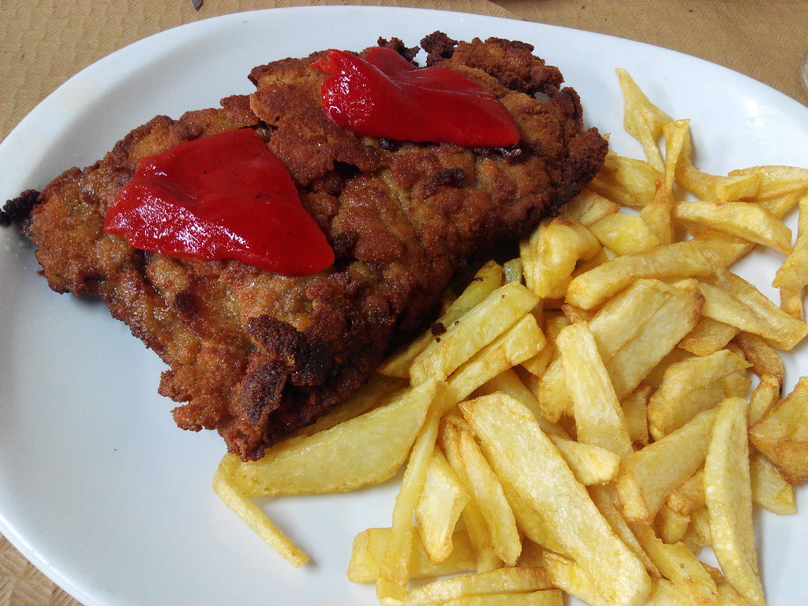

Carnes
Receta Destacada
Cachopo Asturiano de Ternera: Un Placer en Cada Bocado
Sumérgete en el mundo de los sabores asturianos con esta receta auténtica de cachopo de ternera. Elige la mejor carne y los ingredientes más frescos para crear este delicioso plato típico de la región, relleno de queso fundido y jamón serrano, empanado y frito a la perfección. Sigue los sencillos pasos y descubre cómo cada bocado de este platillo se convierte en una experiencia de sabor inigualable.
 Seguir LeyendoBrisket: Un Asado que Despierta los Sentidos
Descubre los secretos de este asado emblemático de Texas, el brisket: una pieza de pecho de ternera marinada con especias, cocida a fuego lento para alcanzar una jugosidad irresistible. Sumérgete en el mundo de la cocina judío-estadounidense con esta receta que transformará tu mesa en un festín inolvidable.
 Seguir Leyendo
Seguir Leyendo
Steak Tartar: Una Experiencia Culinaria Intensa y Sofisticada
Sumérgete en la sofisticación de la gastronomía francesa con el sabor intenso y exquisito del steak tartar. Descubre cómo preparar este plato sublime en menos de 15 minutos, utilizando solomillo de ternera de la mejor calidad y una combinación perfecta de ingredientes que realzan su frescura y exquisitez.
 Seguir Leyendo
Seguir Leyendo
Carrillada en Salsa: Un Clásico Gastronómico que Conquista los Sentidos
Sumérgete en la esencia de la gastronomía española con la receta auténtica de carrillada en salsa. Descubre cómo lograr una textura tierna y un sabor excepcional en cada bocado, con la combinación perfecta de ingredientes cuidadosamente seleccionados y una salsa sedosa que realza el carácter de este plato emblemático.
 Seguir Leyendo
Seguir Leyendo
Sopa Pho: Un Viaje Culinario a Vietnam en Tu Propia Cocina
Descubre los secretos de la auténtica sopa Pho vietnamita con nuestra detallada receta paso a paso. Sumérgete en los aromas y sabores de esta exquisita delicia culinaria, que combina un caldo suntuoso, aromático y lleno de especias, con finos tallarines de arroz y trozos tiernos de carne. Una experiencia gastronómica que te transportará al corazón de Vietnam.
 Seguir Leyendo
Seguir Leyendo